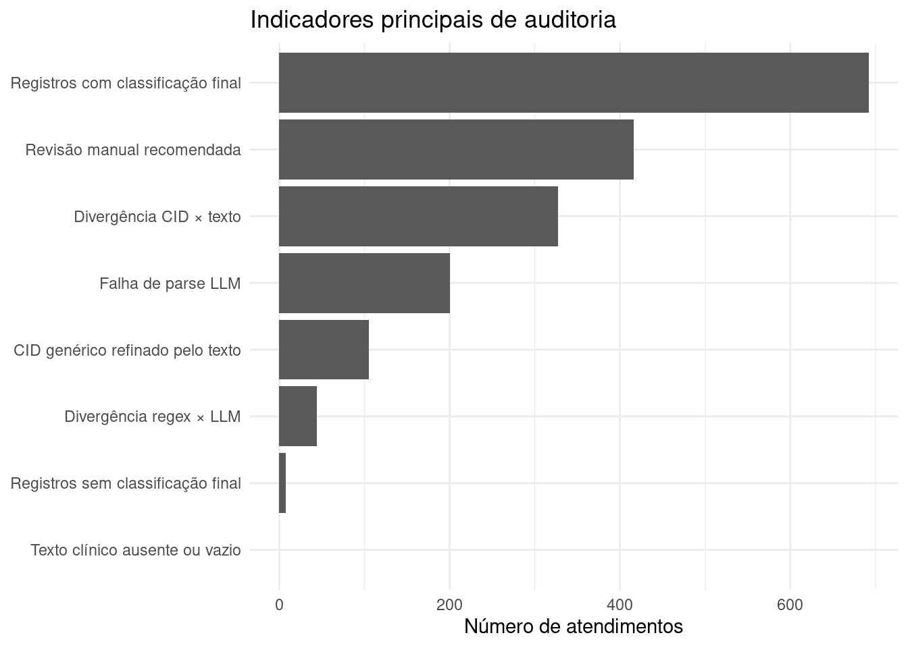
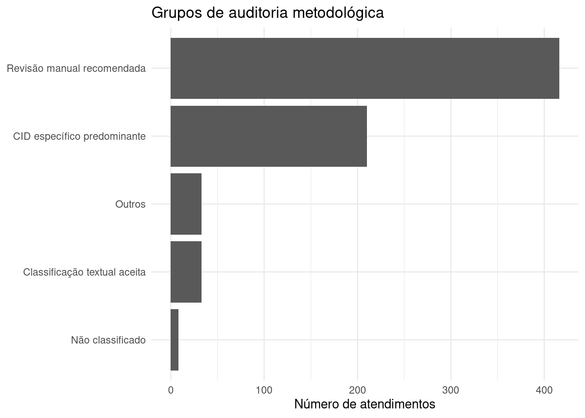

Ver código
source("R/00_pacotes.R")
source("R/04_duckdb.R")
source("R/12_auditoria_limitacoes.R")source("R/00_pacotes.R")
source("R/04_duckdb.R")
source("R/12_auditoria_limitacoes.R")Este capítulo apresenta uma leitura crítica do pipeline de classificação sindrômica construído nos capítulos anteriores.
A finalidade não é recalcular a classificação final, mas avaliar sua rastreabilidade, identificar situações que exigem revisão manual e explicitar as limitações metodológicas do uso combinado de CID, regex e LLM em vigilância sindrômica.
Esta etapa é importante porque o produto não deve ser apresentado apenas como um classificador automático. Ele deve ser entendido como uma ferramenta de apoio à vigilância, com regras explícitas, versionáveis e auditáveis.
A auditoria do pipeline considera que diferentes fontes de informação podem divergir por motivos legítimos:
CID = registro estruturado, sujeito a códigos genéricos ou hipótese diagnóstica ampla
regex = leitura textual explícita, dependente de termos previamente definidos
LLM = leitura textual interpretativa, dependente de prompt, modelo e qualidade do texto
classificação final = regra operacional, não diagnóstico etiológico individualAssim, uma divergência entre camadas não deve ser interpretada automaticamente como erro. Ela indica um ponto que merece revisão metodológica, ajuste de regra ou validação manual.
con <- connect_duckdb()
init_duckdb_schema(con)
classificacao_final <- read_classificacao_final(con)
list(
registros_classificacao_final = nrow(classificacao_final),
colunas_classificacao_final = ncol(classificacao_final)
)$registros_classificacao_final
[1] 700
$colunas_classificacao_final
[1] 42base_auditoria <- build_base_auditoria(classificacao_final)
knitr::kable(
base_auditoria |>
dplyr::select(
record_id,
dplyr::any_of(c("cid", "cid_nome")),
sindrome_cid,
sindrome_regex,
sindrome_llm,
sindrome_final,
fonte_classificacao_final,
grupo_auditoria
) |>
dplyr::slice_head(n = 12),
caption = "Exemplo da base de auditoria metodológica"
)| record_id | cid | cid_nome | sindrome_cid | sindrome_regex | sindrome_llm | sindrome_final | fonte_classificacao_final | grupo_auditoria |
|---|---|---|---|---|---|---|---|---|
| SYN0001 | B34 | Infecção viral de localização não especificada | febril_inespecifica | febril_hemorragica | febril_hemorragica | febril_hemorragica | texto_refina_cid_inespecifico | falha_parse_llm |
| SYN0002 | A39 | Infecção meningocócica | febril_neurologica_meningea | febril_neurologica_meningea | febril_neurologica_meningea | febril_neurologica_meningea | cid_especifico_soberano | falha_parse_llm |
| SYN0003 | B34 | Infecção viral de localização não especificada | febril_inespecifica | febril_exantematica | febril_hemorragica | febril_hemorragica | prioridade_operacional_textual | falha_parse_llm |
| SYN0004 | A08 | Infecções intestinais virais | febril_gastrointestinal | febril_gastrointestinal | febril_gastrointestinal | febril_gastrointestinal | cid_especifico_soberano | falha_parse_llm |
| SYN0005 | NA | NA | NA | febril_exantematica | febril_exantematica | febril_exantematica | regex_llm_concordantes | falha_parse_llm |
| SYN0006 | J06 | Infecções agudas das vias aéreas superiores | febril_respiratoria | febril_respiratoria | febril_respiratoria | febril_respiratoria | cid_especifico_soberano | falha_parse_llm |
| SYN0007 | A05 | Outras intoxicações alimentares bacterianas | febril_gastrointestinal | febril_neurologica_meningea | febril_gastrointestinal | febril_gastrointestinal | cid_especifico_soberano | falha_parse_llm |
| SYN0008 | R50 | Febre de origem desconhecida | febril_inespecifica | febril_hemorragica | febril_hemorragica | febril_hemorragica | texto_refina_cid_inespecifico | falha_parse_llm |
| SYN0009 | J06 | Infecções agudas das vias aéreas superiores | febril_respiratoria | febril_exantematica | febril_exantematica | febril_respiratoria | cid_especifico_soberano | falha_parse_llm |
| SYN0010 | G03 | Meningite devida a outras causas e a causas não especificadas | febril_neurologica_meningea | febril_neurologica_meningea | febril_neurologica_meningea | febril_neurologica_meningea | cid_especifico_soberano | falha_parse_llm |
| SYN0011 | G00 | Meningite bacteriana | febril_neurologica_meningea | febril_neurologica_meningea | febril_neurologica_meningea | febril_neurologica_meningea | cid_especifico_soberano | falha_parse_llm |
| SYN0012 | NA | NA | NA | febril_exantematica | febril_hemorragica | febril_hemorragica | prioridade_operacional_textual | falha_parse_llm |
indicadores_auditoria <- summarise_indicadores_auditoria(base_auditoria)
knitr::kable(
indicadores_auditoria,
caption = "Indicadores principais para auditoria do pipeline"
)| indicador | n | percentual |
|---|---|---|
| Registros com classificação final | 692 | 98.9 |
| Registros sem classificação final | 8 | 1.1 |
| Revisão manual recomendada | 416 | 59.4 |
| Divergência regex × LLM | 44 | 6.3 |
| Divergência CID × texto | 327 | 46.7 |
| CID genérico refinado pelo texto | 105 | 15.0 |
| Falha de parse LLM | 200 | 28.6 |
| Texto clínico ausente ou vazio | 0 | 0.0 |
plot_indicadores_auditoria(base_auditoria)
A tabela abaixo organiza os registros segundo grupos de auditoria. Esses grupos ajudam a selecionar amostras para revisão manual e a identificar onde a regra operacional pode precisar de ajustes.
resumo_grupos_auditoria <- summarise_grupos_auditoria(base_auditoria)Warning: Use of .data in tidyselect expressions was deprecated in tidyselect 1.2.0.
ℹ Please use `"prioridade"` instead of `.data$prioridade`knitr::kable(
resumo_grupos_auditoria,
caption = "Grupos prioritários de auditoria"
)| grupo_auditoria | n | percentual |
|---|---|---|
| Revisão manual recomendada | 416 | 59.4 |
| Classificação textual aceita | 33 | 4.7 |
| CID específico predominante | 210 | 30.0 |
| Não classificado | 8 | 1.1 |
| Outros | 33 | 4.7 |
plot_grupos_auditoria(base_auditoria)
knitr::kable(
summarise_fontes_para_auditoria(base_auditoria) |>
dplyr::slice_head(n = 30),
caption = "Relação entre fonte da classificação final e grupo de auditoria"
)| fonte_classificacao_final | grupo_auditoria | n | percentual_na_fonte |
|---|---|---|---|
| apenas_regex | revisao_manual_recomendada | 97 | 100.0 |
| cid_especifico_soberano | revisao_manual_recomendada | 173 | 37.2 |
| cid_especifico_soberano | sem_alerta_auditoria | 153 | 32.9 |
| cid_especifico_soberano | falha_parse_llm | 139 | 29.9 |
| cid_inespecifico_sem_refinamento_textual | cid_generico_refinado_por_texto | 21 | 63.6 |
| cid_inespecifico_sem_refinamento_textual | falha_parse_llm | 12 | 36.4 |
| prioridade_operacional_textual | falha_parse_llm | 14 | 100.0 |
| regex_llm_concordantes | falha_parse_llm | 19 | 100.0 |
| regex_refina_cid_inespecifico | revisao_manual_recomendada | 50 | 100.0 |
| sem_classificacao | nao_classificado_final | 6 | 75.0 |
| sem_classificacao | falha_parse_llm | 2 | 25.0 |
| texto_refina_cid_inespecifico | falha_parse_llm | 14 | 100.0 |
A amostra abaixo prioriza registros com maior valor metodológico para revisão: falhas de parse da LLM, revisão manual recomendada, divergência entre regex e LLM, divergência entre CID e texto, uso de apenas uma camada textual e refinamento de CID genérico pelo texto clínico.
amostra_auditoria_metodologica <- selecionar_amostra_auditoria_metodologica(
base_auditoria = base_auditoria,
n = 30
)
knitr::kable(
amostra_auditoria_metodologica,
caption = "Amostra priorizada para revisão manual metodológica"
)| record_id | cid | cid_nome | sindrome_cid | sindrome_regex | sindrome_llm | sindrome_final | fonte_classificacao_final | regra_classificacao_final | grupo_auditoria | motivo_revisao | justificativa_llm | texto_clinico |
|---|---|---|---|---|---|---|---|---|---|---|---|---|
| SYN0001 | B34 | Infecção viral de localização não especificada | febril_inespecifica | febril_hemorragica | febril_hemorragica | febril_hemorragica | texto_refina_cid_inespecifico | cid_inespecifico_regex_llm_concordantes | falha_parse_llm | NA | Texto menciona febre, sintomas respiratórios, sintomas gastrointestinais, sangramento, sintomas inespecíficos, compatível com febril_hemorragica. | Febre e dor no corpo Refere febre não aferida, dor no corpo importante, cefaleia e mal estar geral. Nega tosse, nega diarreia e nega sangramento. |
| SYN0002 | A39 | Infecção meningocócica | febril_neurologica_meningea | febril_neurologica_meningea | febril_neurologica_meningea | febril_neurologica_meningea | cid_especifico_soberano | cid_especifico_prevalece | falha_parse_llm | NA | Texto menciona febre, sinais neurológicos/meníngeos, sintomas inespecíficos, compatível com febril_neurologica_meningea. | Febre e cefaleia Criança com febre e convulsão em casa. Sonolenta na chegada, com irritabilidade importante. |
| SYN0003 | B34 | Infecção viral de localização não especificada | febril_inespecifica | febril_exantematica | febril_hemorragica | febril_hemorragica | prioridade_operacional_textual | cid_inespecifico_regex_llm_divergentes | falha_parse_llm | CID inespecífico com divergência entre regex e LLM; aplicada prioridade operacional e revisão recomendada. | Texto menciona febre, exantema/manchas, sintomas gastrointestinais, sangramento, sintomas inespecíficos, compatível com febril_hemorragica. | Febre e dor no corpo Paciente relata febre baixa, artralgia e cansaço. Nega sangramentos, nega rash e nega vômitos. |
| SYN0004 | A08 | Infecções intestinais virais | febril_gastrointestinal | febril_gastrointestinal | febril_gastrointestinal | febril_gastrointestinal | cid_especifico_soberano | cid_especifico_prevalece | falha_parse_llm | NA | Texto menciona febre, sintomas gastrointestinais, compatível com febril_gastrointestinal. | Febre e diarreia Relata febre, nausea, episódios de vômito e evacuações líquidas. Sem sintomas respiratórios. !!! |
| SYN0005 | NA | NA | NA | febril_exantematica | febril_exantematica | febril_exantematica | regex_llm_concordantes | sem_cid_regex_llm_concordantes | falha_parse_llm | NA | Texto menciona febre, sintomas respiratórios, exantema/manchas, sintomas gastrointestinais, sintomas inespecíficos, compatível com febril_exantematica. | Febre e manchas FEBRE, manchas avermelhadas no corpo e dor no corpo. Sem diarreia. Sem tosse importante. |
| SYN0006 | J06 | Infecções agudas das vias aéreas superiores | febril_respiratoria | febril_respiratoria | febril_respiratoria | febril_respiratoria | cid_especifico_soberano | cid_especifico_prevalece | falha_parse_llm | NA | Texto menciona febre, sintomas respiratórios, sintomas inespecíficos, compatível com febril_respiratoria. | Febre e tosse Pcte com fbre não aferida, odinofagia, coriza e tosse. Relata cansaço e dor no corpo. Nega sintomas gastrointestinais. |
| SYN0007 | A05 | Outras intoxicações alimentares bacterianas | febril_gastrointestinal | febril_neurologica_meningea | febril_gastrointestinal | febril_gastrointestinal | cid_especifico_soberano | cid_especifico_prevalece | falha_parse_llm | CID específico diverge de ao menos uma camada textual; revisar para auditoria. | Texto menciona febre, sintomas gastrointestinais, compatível com febril_gastrointestinal. | Febre e diarreia Criança com febre alta, vômitos repetidos e diarreia líquida. Mãe refere pouca aceitação alimentar e sonolência leve. |
| SYN0008 | R50 | Febre de origem desconhecida | febril_inespecifica | febril_hemorragica | febril_hemorragica | febril_hemorragica | texto_refina_cid_inespecifico | cid_inespecifico_regex_llm_concordantes | falha_parse_llm | NA | Texto menciona febre, sintomas respiratórios, sintomas gastrointestinais, sangramento, sintomas inespecíficos, compatível com febril_hemorragica. | Febre e dor no corpo Refere fbre não aferida, dor no corpo importante, cefaleia e mal estar geral. Nega tosse, nega diarreia e nega sangramento. |
| SYN0009 | J06 | Infecções agudas das vias aéreas superiores | febril_respiratoria | febril_exantematica | febril_exantematica | febril_respiratoria | cid_especifico_soberano | cid_especifico_prevalece | falha_parse_llm | CID específico diverge de ao menos uma camada textual; revisar para auditoria. | Texto menciona febre, sintomas respiratórios, exantema/manchas, sintomas gastrointestinais, sintomas inespecíficos, compatível com febril_exantematica. | Febre e tosse FEBRE alta desde ontem, tosse produtiva, congestão nasal e mal estar. Sem manchas na pele. Sem vômitos. Refere piora da tosse durante a noite. |
| SYN0010 | G03 | Meningite devida a outras causas e a causas não especificadas | febril_neurologica_meningea | febril_neurologica_meningea | febril_neurologica_meningea | febril_neurologica_meningea | cid_especifico_soberano | cid_especifico_prevalece | falha_parse_llm | NA | Texto menciona febre, sintomas gastrointestinais, sinais neurológicos/meníngeos, sintomas inespecíficos, compatível com febril_neurologica_meningea. | Febre e cefaleia Paciente com febre, cefaleia intensa, rigidez de nuca e fotofobia. Refere vômitos e piora progressiva desde a manhã. |
| SYN0011 | G00 | Meningite bacteriana | febril_neurologica_meningea | febril_neurologica_meningea | febril_neurologica_meningea | febril_neurologica_meningea | cid_especifico_soberano | cid_especifico_prevalece | falha_parse_llm | NA | Texto menciona febre, sintomas gastrointestinais, sinais neurológicos/meníngeos, sintomas inespecíficos, compatível com febril_neurologica_meningea. | Febre e cefaleia fbre alta, confusão mental e vômitos em jato. Familiar refere piora nas últimas horas. |
| SYN0012 | NA | NA | NA | febril_exantematica | febril_hemorragica | febril_hemorragica | prioridade_operacional_textual | sem_cid_regex_llm_divergentes | falha_parse_llm | Regex e LLM divergem; aplicada prioridade operacional e revisão recomendada. | Texto menciona febre, exantema/manchas, sintomas gastrointestinais, sangramento, sintomas inespecíficos, compatível com febril_hemorragica. | Febre e dor no corpo Paciente relata febre baixa, artralgia e cansaço. Nega sangramentos, nega rash e nega vômitos. |
| SYN0013 | B15 | Hepatite aguda A | febril_ictero_hemorragica | febril_hemorragica | febril_hemorragica | febril_ictero_hemorragica | cid_especifico_soberano | cid_especifico_prevalece | falha_parse_llm | CID específico diverge de ao menos uma camada textual; revisar para auditoria. | Texto menciona febre, exantema/manchas, sangramento, sintomas inespecíficos, compatível com febril_hemorragica. | Febre e manchas Febre e rash cutâneo difuso, prurido importante e dor no corpo. Nega sangramento gengival. |
| SYN0014 | A09 | Diarreia e gastroenterite de origem infecciosa presumível | febril_gastrointestinal | febril_gastrointestinal | febril_gastrointestinal | febril_gastrointestinal | cid_especifico_soberano | cid_especifico_prevalece | falha_parse_llm | NA | Texto menciona febre, sintomas gastrointestinais, compatível com febril_gastrointestinal. | Febre e diarreia Paciente com febre, náuseas, vômitos e diarreia desde ontem. Refere dor abdominal em cólica e baixa aceitação alimentar. |
| SYN0015 | NA | NA | NA | febril_exantematica | febril_hemorragica | febril_hemorragica | prioridade_operacional_textual | sem_cid_regex_llm_divergentes | falha_parse_llm | Regex e LLM divergem; aplicada prioridade operacional e revisão recomendada. | Texto menciona febre, sintomas respiratórios, exantema/manchas, sintomas gastrointestinais, sangramento, compatível com febril_hemorragica. | Febre e tosse Paciente refere febre há cerca de três dias, tosse seca persistente, coriza e dor de garganta. Nega diarreia, nega exantema e nega sangramentos. Relata contato com familiar gripado na última semana. |
| SYN0016 | NA | NA | NA | febril_gastrointestinal | febril_gastrointestinal | febril_gastrointestinal | regex_llm_concordantes | sem_cid_regex_llm_concordantes | falha_parse_llm | NA | Texto menciona febre, sintomas gastrointestinais, compatível com febril_gastrointestinal. | Febre e diarreia Paciente com febre, náuseas, vômitos e diarreia desde ontem. Refere dor abdominal em cólica e baixa aceitação alimentar. |
| SYN0017 | A08 | Infecções intestinais virais | febril_gastrointestinal | febril_exantematica | febril_hemorragica | febril_gastrointestinal | cid_especifico_soberano | cid_especifico_prevalece | falha_parse_llm | CID específico diverge de ao menos uma camada textual; revisar para auditoria. | Texto menciona febre, sintomas respiratórios, exantema/manchas, sintomas gastrointestinais, sangramento, compatível com febril_hemorragica. | Febre e diarreia FEBRE + dor abdominal + diarreiaa desde madrugada. Nega tosse, nega manchas na pele e nega sangramentos. |
| SYN0018 | A08 | Infecções intestinais virais | febril_gastrointestinal | febril_neurologica_meningea | febril_gastrointestinal | febril_gastrointestinal | cid_especifico_soberano | cid_especifico_prevalece | falha_parse_llm | CID específico diverge de ao menos uma camada textual; revisar para auditoria. | Texto menciona febre, sintomas gastrointestinais, compatível com febril_gastrointestinal. | Febre e diarreia Criança com FEBRE alta, vômitos repetidos e diarreia líquida. Mãe refere pouca aceitação alimentar e sonolência leve. !!! |
| SYN0019 | J10 | Influenza devida a outro vírus identificado | febril_respiratoria | febril_exantematica | febril_exantematica | febril_respiratoria | cid_especifico_soberano | cid_especifico_prevalece | falha_parse_llm | CID específico diverge de ao menos uma camada textual; revisar para auditoria. | Texto menciona febre, sintomas respiratórios, exantema/manchas, sintomas gastrointestinais, sintomas inespecíficos, compatível com febril_exantematica. | Febre e tosse FEBRE alta desde ontem, tosse produtiva, congestão nasal e mal estar. Sem manchas na pele. Sem vômitos. Refere piora da tosse durante a noite. |
| SYN0020 | R50 | Febre de origem desconhecida | febril_inespecifica | febril_exantematica | febril_exantematica | febril_exantematica | texto_refina_cid_inespecifico | cid_inespecifico_regex_llm_concordantes | falha_parse_llm | NA | Texto menciona febre, sintomas respiratórios, exantema/manchas, sintomas inespecíficos, compatível com febril_exantematica. | Febre e dor no corpo Febre, cefalea, dor no corpo e indisposição. Nega manchas na pele. Nega falta de ar. |
| SYN0021 | J11 | Influenza devida a vírus não identificado | febril_respiratoria | febril_exantematica | febril_exantematica | febril_respiratoria | cid_especifico_soberano | cid_especifico_prevalece | falha_parse_llm | CID específico diverge de ao menos uma camada textual; revisar para auditoria. | Texto menciona febre, sintomas respiratórios, exantema/manchas, sintomas gastrointestinais, compatível com febril_exantematica. | Febre e tosse Criança com febre, tosse persistente e nariz escorrendo. Mãe nega manchas vermelhas e nega episódios de diarreia. |
| SYN0022 | A38 | Escarlatina | febril_exantematica | febril_exantematica | febril_exantematica | febril_exantematica | cid_especifico_soberano | cid_especifico_prevalece | falha_parse_llm | NA | Texto menciona febre, exantema/manchas, compatível com febril_exantematica. | Febre e manchas Mãe relata criança com febre alta desde ontem, exantema em tronco e membros superiores. Sem sintomas respiratórios. |
| SYN0023 | B34 | Infecção viral de localização não especificada | febril_inespecifica | febril_exantematica | febril_hemorragica | febril_hemorragica | prioridade_operacional_textual | cid_inespecifico_regex_llm_divergentes | falha_parse_llm | CID inespecífico com divergência entre regex e LLM; aplicada prioridade operacional e revisão recomendada. | Texto menciona febre, exantema/manchas, sintomas gastrointestinais, sangramento, sintomas inespecíficos, compatível com febril_hemorragica. | Febre e dor no corpo PACIENTE RELATA FEBRE BAIXA, ARTRALGIA E CANSAÇO. NEGA SANGRAMENTOS, NEGA RASH E NEGA VÔMITOS. |
| SYN0024 | B34 | Infecção viral de localização não especificada | febril_inespecifica | febril_inespecifica | febril_inespecifica | febril_inespecifica | cid_inespecifico_sem_refinamento_textual | cid_inespecifico_mantido | falha_parse_llm | NA | Texto menciona febre, sintomas inespecíficos, compatível com febril_inespecifica. | Febre e dor no corpo PAC com febre há dois dias, mialgia, calafrios e prostração. Sem queixas respiratórias ou gastrointestinais no momento. |
| SYN0025 | A05 | Outras intoxicações alimentares bacterianas | febril_gastrointestinal | febril_gastrointestinal | febril_gastrointestinal | febril_gastrointestinal | cid_especifico_soberano | cid_especifico_prevalece | falha_parse_llm | NA | Texto menciona febre, sintomas gastrointestinais, compatível com febril_gastrointestinal. | Febre e diarreia Paciente com febre, náuseas, vômitos e diarreia desde ontem. Refere dor abdominal em cólica e baixa aceitação alimentar. |
| SYN0026 | A08 | Infecções intestinais virais | febril_gastrointestinal | febril_neurologica_meningea | febril_gastrointestinal | febril_gastrointestinal | cid_especifico_soberano | cid_especifico_prevalece | falha_parse_llm | CID específico diverge de ao menos uma camada textual; revisar para auditoria. | Texto menciona febre, sintomas gastrointestinais, compatível com febril_gastrointestinal. | Febre e diarreia Criança com FEBRE alta, vômitos repetidos e diarreia líquida. Mãe refere pouca aceitação alimentar e sonolência leve. |
| SYN0027 | A08 | Infecções intestinais virais | febril_gastrointestinal | febril_gastrointestinal | febril_gastrointestinal | febril_gastrointestinal | cid_especifico_soberano | cid_especifico_prevalece | falha_parse_llm | NA | Texto menciona febre, sintomas gastrointestinais, compatível com febril_gastrointestinal. | Febre e diarreia PACIENTE COM FEBRE, NÁUSEAS, VÔMITOS E DIARREIA DESDE ONTEM. REFERE DOR ABDOMINAL EM CÓLICA E BAIXA ACEITAÇÃO ALIMENTAR. |
| SYN0028 | A91 | Febre hemorrágica devida ao vírus da dengue | febril_hemorragica | febril_exantematica | febril_exantematica | febril_hemorragica | cid_especifico_soberano | cid_especifico_prevalece | falha_parse_llm | CID específico diverge de ao menos uma camada textual; revisar para auditoria. | Texto menciona febre, exantema/manchas, compatível com febril_exantematica. | Febre e manchas Mãe relata criança com febre alta desde ontem, exantema em tronco e membros superiores. Sem sintomas respiratórios. |
| SYN0029 | B34 | Infecção viral de localização não especificada | febril_inespecifica | NA | NA | febril_inespecifica | cid_inespecifico_sem_refinamento_textual | cid_inespecifico_mantido | falha_parse_llm | NA | Texto contém negação de febre; não classificado como síndrome febril pela camada LLM. | Febre e dor no corpo Paciente afebril no momento. Nega febre. Refere febre não aferida, dor no corpo importante, cefaleia e mal estar geral. Nega tosse, nega diarreia e nega sangramento. |
| SYN0030 | A09 | Diarreia e gastroenterite de origem infecciosa presumível | febril_gastrointestinal | febril_neurologica_meningea | febril_gastrointestinal | febril_gastrointestinal | cid_especifico_soberano | cid_especifico_prevalece | falha_parse_llm | CID específico diverge de ao menos uma camada textual; revisar para auditoria. | Texto menciona febre, sintomas gastrointestinais, compatível com febril_gastrointestinal. | Febre e diarreia Criança com FEBRE alta, vômitos repetidos e diarreia líquida. Mãe refere pouca aceitação alimentar e sonolência leve. |
A tabela abaixo resume as principais limitações do pipeline e as estratégias de mitigação recomendadas para uma etapa operacional com dados reais.
knitr::kable(
listar_limitacoes_pipeline(),
caption = "Limitações metodológicas e estratégias de mitigação"
)| dimensao | limitacao | mitigacao |
|---|---|---|
| Base sintética | Os resultados demonstrativos foram produzidos sobre base sintética, ainda não sobre a base real do cliente. | Reexecutar o pipeline com dados reais e comparar distribuição, qualidade textual e padrões de divergência. |
| CID | CIDs podem ser ausentes, genéricos, conflitantes ou representar hipótese diagnóstica não descrita no texto. | Separar CIDs específicos de CIDs genéricos e permitir refinamento textual quando apropriado. |
| Regex | Regex captura padrões explícitos, mas pode perder variações linguísticas não previstas ou contextos ambíguos. | Manter dicionário versionado e revisar falsos negativos/falsos positivos periodicamente. |
| LLM | LLMs podem falhar no JSON, interpretar ambiguidades de forma instável ou inferir além do texto disponível. | Usar modo estruturado, prompt versionado, validação de schema, logs e fallback seguro. |
| Texto clínico | Queixa e anamnese podem ser curtas, incompletas, negadas, abreviadas ou conter erros de digitação. | Medir completude textual e criar indicadores de suficiência do texto para classificação. |
| Classificação final | A classificação final é uma regra operacional, não diagnóstico etiológico individual. | Manter rastreabilidade da fonte decisória e sinalizar revisão manual quando necessário. |
| Validação | O desempenho real depende de validação manual com amostra rotulada por especialistas. | Construir padrão-ouro com dupla revisão, consenso e métricas de sensibilidade, especificidade e F1. |
| Uso operacional | O pipeline deve apoiar vigilância e priorização, não substituir investigação epidemiológica ou revisão clínica. | Definir protocolo de uso, rotina de auditoria, responsáveis e critérios de escalonamento. |
Antes de uso operacional contínuo, o pipeline deve ser validado com uma amostra real revisada por especialistas. Essa validação deve medir desempenho por síndrome, e não apenas acurácia global.
knitr::kable(
listar_recomendacoes_validacao(),
caption = "Recomendações para validação com base real"
)| etapa | recomendacao |
|---|---|
| Amostragem | Selecionar amostra estratificada por síndrome final, fonte decisória, unidade, semana e grupo de auditoria. |
| Rotulagem manual | Utilizar ao menos dois revisores independentes e etapa de consenso para casos discordantes. |
| Métricas | Calcular sensibilidade, especificidade, valor preditivo positivo, F1 e matriz de confusão por síndrome. |
| Auditoria de divergências | Priorizar registros com CID/texto divergente, regex/LLM divergente, uso de apenas uma camada textual e falhas de parse. |
| Calibração | Ajustar dicionários, prompt e regras de decisão com base nos erros observados, mantendo versionamento. |
| Monitoramento contínuo | Acompanhar semanalmente volume, proporção de revisão manual, falhas LLM e mudanças bruscas no perfil de classificação. |
A auditoria reforça que o pipeline deve ser entendido como uma estrutura de vigilância e priorização, não como diagnóstico clínico individual. A classificação final é útil porque reduz a complexidade dos registros em uma saída operacional única, mas seu valor depende da transparência das regras, da qualidade dos textos e da validação periódica.
A distinção entre CID específico e CID genérico é um ponto central. Códigos genéricos, como febre não especificada ou infecção viral inespecífica, não devem bloquear o aproveitamento de sinais clínicos mais detalhados presentes na queixa ou na anamnese. Por outro lado, quando houver divergência relevante entre CID, regex e LLM, a rastreabilidade da decisão permite selecionar casos para revisão manual.
Para transformar este pipeline em rotina operacional, recomenda-se:
DBI::dbDisconnect(con, shutdown = TRUE)